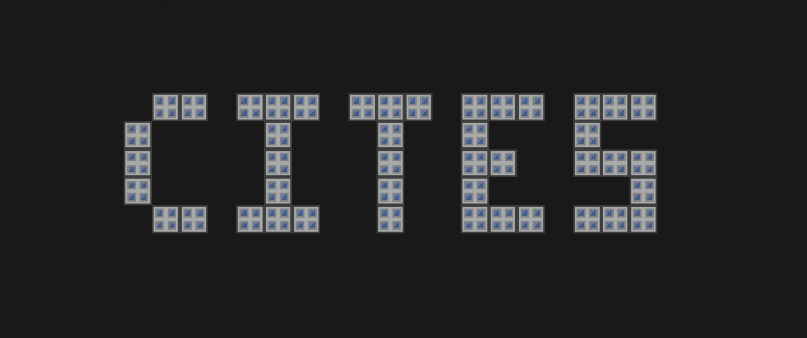

this is a little pet project made in libgdx to exercise my java skills.
WASD to move around.
Q/E to zoom in and out respectively.
aim of the game is to build a massive, self sustaining city
produce enough food to prevent your citizens from starving and going on strike
produce enough energy to keep your city running
maintain your citizens' happiness to improve their productivity by tending to their needs and wants